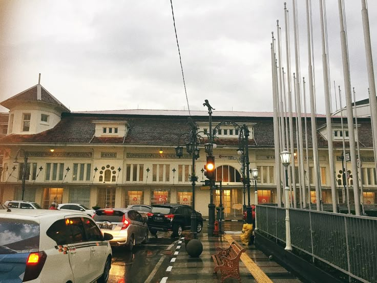

Sejarah

Kata Bandung berasal dari kata bendung atau bendungan karena terbendungnya sungai Citarum oleh
lava Gunung Tangkuban Parahu yang lalu membentuk telaga. Legenda yang diceritakan oleh
orang-orang tua di Bandung mengatakan bahwa nama Bandung diambil dari sebuah kendaraan air
yang terdiri dari dua perahu yang diikat berdampingan yang disebut perahu bandung yang
digunakan oleh Bupati Bandung, R.A. Wiranatakusumah II, untuk melayari Ci Tarum dalam mencari
tempat kedudukan kabupaten yang baru untuk menggantikan ibu kota yang lama di Dayeuhkolot.
Berdasarkan filosofi Sunda, kata Bandung juga berasal dari kalimat Nga-Bandung-an Banda
Indung, yang merupakan kalimat sakral dan luhur karena mengandung nilai ajaran Sunda.
Nga-Bandung-an artinya menyaksikan atau bersaksi. Banda adalah segala sesuatu yang berada di
alam hidup yaitu di bumi dan atmosfer, baik makhluk hidup maupun benda mati. Sinonim dari
banda adalah harta. Indung berarti Ibu atau Bumi, disebut juga sebagai Ibu Pertiwi tempat
Banda berada.
Wisata

Sejak dibukanya Jalan Tol Cipularang, kota Bandung telah menjadi tujuan utama dalam menikmati
liburan akhir pekan terutama dari masyarakat yang berasal dari Jakarta sekitarnya. Selain
menjadi kota wisata belanja, kota Bandung juga dikenal dengan sejumlah besar bangunan lama
berarsitektur peninggalan Belanda.
Farm House Lembang

Berada di jalur utama Bandung-Lembang, Farm House menjadi objek wisata yang tidak pernah sepi
pengunjung. Selain karena letaknya strategis, kawasan ini juga menghadirkan nuansa wisata khas
Eropa. Semua itu diterapkan dalam bentuk spot swafoto Instagramable.
Observatorium Bosscha

Memiliki beberapa teleskop, antara lain, Refraktor Ganda Zeiss, Schmidt Bimasakti, Refraktor
Bamberg, Cassegrain GOTO, dan Teleskop Surya. Refraktor Ganda Zeiss adalah jenis teleskop
terbesar untuk meneropong bintang. Benda ini diletakkan pada atap kubah sehingga saat teropong
digunakan, atap tersebut harus dibuka. Observatorium Bosscha boleh dikunjungi oleh siapapun,
tanpa tiket. Namun, bagi yang ingin menggunakan teleskop Zeiss, wajib mendaftarkan diri. Untuk
instansi atau lembaga pendidikan, diberikan jadwal hari Selasa sampai Jumat. Sementara itu,
kunjungan individu dibuka setiap hari Sabtu.
Kuliner
Mie Kocok Bandung

Mie kocok adalah salah satu kuliner khas Bandung yang berbahan dasar mie kuning tebal
disajikan dengan kuah kaldu sapi, kikil, dan bakso. Mie kocok memiliki cita rasa gurih dan
nikmat. Mie kocok biasanya disajikan dengan taburan bawang goreng, seledri, dan jeruk nipis.
Jajanan Serba Aci

Jajanan serba aci merupakan jajanan khas Bandung yang berbahan dasar tepung tapioka. Jajanan
ini memiliki cita rasa gurih dan kenyal. Beberapa jajanan serba aci yang terkenal di Bandung
antara lain cilok, cimol, cireng, dan batagor. Jajanan serba aci biasanya disajikan dengan
bumbu kacang atau saus sambal.
Geografis

Kota Bandung dikelilingi oleh pegunungan, sehingga bentuk morfologi wilayahnya bagaikan sebuah
mangkok raksasa, secara geografis kota ini terletak di tengah-tengah provinsi Jawa Barat,
serta berada pada ketinggian ±768 m di atas permukaan laut, dengan titik tertinggi di berada
di sebelah utara dengan ketinggian 1.050 meter di atas permukaan laut dan sebelah selatan
merupakan kawasan rendah dengan ketinggian 675 meter di atas permukaan laut.
Kota Bandung dialiri dua sungai utama, yaitu Sungai Cikapundung dan Sungai Citarum beserta
anak-anak sungainya yang pada umumnya mengalir ke arah selatan dan bertemu di Sungai Citarum.
Dengan kondisi yang demikian, Bandung selatan sangat rentan terhadap masalah banjir terutama
pada musim hujan.
Cuaca
Berikut adalah estimasi suhu rata-rata di Kota Bandung berdasarkan waktu:
| Waktu |
Suhu Rata-Rata |
Kondisi Kelembapan |
| Pagi (06.00-12.00) |
20°C - 22°C |
Sejuk / Berkabut |
| Siang (12.00-18.00) |
28°C - 30°C |
Cukup Terik |
| Malam (18.00-24.00) |
22°C - 24°C |
Dingin / Berangin |
Buku Tamu Pengunjung
Punya saran atau kesan setelah membaca profil Kota Bandung? Silahkan isi form di bawah ini: